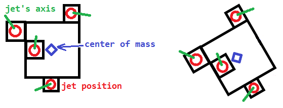
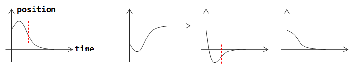
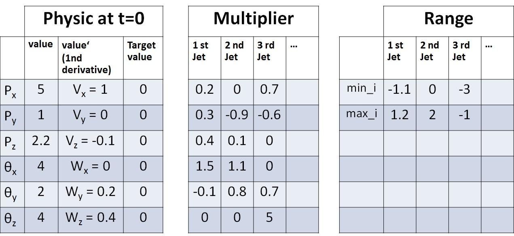

AI of spaceship's propulsion: land a 3D ship at position=0 and angle=0
This is a very difficult problem about how to maneuver a spaceship that can both translate and rotate in 3D, for a space game.
The spaceship has n jets placing in various positions and directions.
Transformation of i-th jet relative to the CM of spaceship is constant =
Ti.
- Transformation is a tuple of position and orientation (quaternion or matrix 3x3 or, less preferable, Euler angles).
- A transformation can also be denoted by a single matrix 4x4.
In other words, all jet are glued to the ship and cannot rotate.
A jet can exert force to the spaceship only in direction of its axis (green).
As a result of glue, the axis rotated along with the spaceship.

All jets can exert force (vector,Fi) at a certain magnitude (scalar,fi) :i-th jet can exert force (Fi= axis x fi) only within range min_i<= fi
<=max_i.
Both min_i and max_i are constant with known value.
To be clear, unit of min_i,fi,max_i is Newton.
Ex. If the range doesn't cover 0, it means that the jet can't be turned
off.
The spaceship's mass = m and inertia tensor = I.
The spaceship's current transformation = Tran0, velocity = V0,
angularVelocity = W0.
The spaceship physic body follows well-known physic rules :-Torque=r x FF=maangularAcceleration = I^-1 x TorquelinearAcceleration = m^-1 x F
I is different for each direction, but for the sake of simplicity, it has
the same value for every direction (sphere-like). Thus, I can be thought as
a scalar instead of matrix 3x3.
Question
How to control all jets (all fi) to land the ship with position=0 and
angle=0?
Math-like specification: Find function of fi(time) that take minimum
time to reach position=(0,0,0), orient=identity with final
angularVelocity and velocity = zero.
More specifically, what are names of technique or related algorithms to solve this problem?
My research (1 dimension)
If the universe is 1D (thus, no rotation), the problem will be easy to solve.
( Thank Gavin Lock, https://stackoverflow.com/a/40359322/3577745 )
First, find the value MIN_BURN=sum{min_i}/m and MAX_BURN=sum{max_i}/m.
Second, think in opposite way, assume that x=0 (position) and v=0 at
t=0,
then create two parabolas with x''=MIN_BURN and x''=MAX_BURN.
(The 2nd derivative is assumed to be constant for a period of time, so it is
parabola.)
The only remaining work is to join two parabolas together.
The red dash line is where them join.

In the period of time that x''=MAX_BURN, all fi=max_i.
In the period of time that x''=MIN_BURN, all fi=min_i.
It works really well for 1D, but in 3D, the problem is far more harder.
Note:
Just a rough guide pointing me to a correct direction is really appreciated.
I don't need a perfect AI, e.g. it can take a little more time than optimum.
I think about it for more than 1 week, still find no clue.
Other attempts / opinions
- I don't think machine learning like neural network is appropriate for this case.
- Boundary-constrained-least-square-optimisation may be useful but I don't know how to fit my two hyper-parabola to that form of problem.
- This may be solved by using many iterations, but how?
- I have searched NASA's website, but not find anything useful.
- The feature may exist in "Space Engineer" game.
- Commented by Logman: Knowledge in mechanical engineering may help.
- Commented by AndyG: It is a motion planning problem with nonholonomic constraints. It could be solved by Rapidly exploring random tree (RRTs), theory around Lyapunov equation, and Linear quadratic regulator.
- Commented by John Coleman: This seems more like optimal control than AI.
Edit: "Near-0 assumption" (optional)
- In most case, AI (to be designed) run continuously (i.e. called every time-step).
- Thus, with the AI's tuning,
Tran0is usually near-identity,V0andW0are usually not so different from 0, e.g.|Seta0|<30 degree,|W0|<5 degree per time-step. - I think that AI based on this assumption would work OK in most case. Although not perfect, it can be considered as a correct solution (I started to think that without this assumption, this question might be too hard).
- I faintly feel that this assumption may enable some tricks that use some "linear"-approximation.
The 2nd Alternative Question - "Tune 12 Variables" (easier)
The above question might also be viewed as followed :-
I want to tune all six values and six values' (1st-derivative) to be 0,
using lowest amount of time-steps.
Here is a table show a possible situation that AI can face:-

The Multiplier table stores inertia^-1 * r and mass^-1 from the
original question.
The Multiplier and Range are constant.
Each timestep, the AI will be asked to pick a tuple of values fi that must
be in the range [min_i,max_i] for every i+1-th jet.
Ex. From the table, AI can pick (f0=1,f1=0.1,f2=-1).
Then, the caller will use fi to multiply with the Multiplier table to
get values''.Px'' = f0*0.2+f1*0.0+f2*0.7Py'' = f0*0.3-f1*0.9-f2*0.6Pz'' = ....................SetaX''= ....................SetaY''= ....................SetaZ''= f0*0.0+f1*0.0+f2*5.0
After that, the caller will update all values' with formula values' +=
values''.Px' += Px''.................SetaZ' += SetaZ''
Finally, the caller will update all values with formula values += values'.Px += Px'.................SetaZ += SetaZ'
AI will be asked only once for each time-step.
The objective of AI is to return tuples of fi (can be different for
different time-step), to make
Px,Py,Pz,SetaX,SetaY,SetaZ,Px',Py',Pz',SetaX',SetaY',SetaZ'
= 0 (or very near),
by using least amount of time-steps as possible.
I hope providing another view of the problem will make it easier.
It is not the exact same problem, but I feel that a solution that can solve
this version can bring me very close to the answer of the original question.
An answer for this alternate question can be very useful.
The 3rd Alternative Question - "Tune 6 Variables" (easiest)
This is a lossy simplified version of the previous alternative.
The only difference is that the world is now 2D, Fi is also 2D (x,y).
Thus I have to tune only Px,Py,SetaZ,Px',Py',SetaZ'=0, by using
least amount of time-steps as possible.
An answer to this easiest alternative question can be considered useful.
Answer
I'll try to keep this short and sweet.
One approach that is often used to solve these problems in simulation is a Rapidly-Exploring Random Tree. To give at least a little credibility to my post, I'll admit I studied these, and motion planning was my research lab's area of expertise (probabilistic motion planning).
The canonical paper to read on these is Steven LaValle's Rapidly-exploring random trees: A new tool for path planning, and there have been a million papers published since that all improve on it in some way.
First I'll cover the most basic description of an RRT, and then I'll describe how it changes when you have dynamical constraints. I'll leave fiddling with it afterwards up to you:
Terminology
"Spaces"
The state of your spaceship can be described by its 3-dimension position (x, y, z) and its 3-dimensional rotation (alpha, beta, gamma) (I use those greek names because those are the Euler angles).
state space is all possible positions and rotations your spaceship can inhabit. Of course this is infinite.
collision space are all of the "invalid" states. i.e. realistically impossible positions. These are states where your spaceship is in collision with some obstacle (With other bodies this would also include collision with itself, for example planning for a length of chain). Abbreviated as C-Space.
free space is anything that is not collision space.
General Approach (no dynamics constraints)
For a body without dynamical constraints the approach is fairly straightforward:
- Sample a state
- Find nearest neighbors to that state
- Attempt to plan a route between the neighbors and the state
I'll briefly discuss each step
Sampling a state
Sampling a state in the most basic case means choosing at random values for each entry in your state space. If we did this with your space ship, we'd randomly sample for x, y, z, alpha, beta, gamma across all of their possible values (uniform random sampling).
Of course way more of your space is obstacle space than free space typically (because you usually confine your object in question to some "environment" you want to move about inside of). So what is very common to do is to take the bounding cube of your environment and sample positions within it (x, y, z), and now we have a lot higher chance to sample in the free space.
In an RRT, you'll sample randomly most of the time. But with some probability you will actually choose your next sample to be your goal state (play with it, start with 0.05). This is because you need to periodically test to see if a path from start to goal is available.
Finding nearest neighbors to a sampled state
You chose some fixed integer > 0. Let's call that integer k. Your k
nearest neighbors are nearby in state space. That means you have some
distance metric that can tell you how far away states are from each other.
The most basic distance metric is Euclidean distance, which only accounts for
physical distance and doesn't care about rotational angles (because in the
simplest case you can rotate 360 degrees in a single timestep).
Initially you'll only have your starting position, so it will be the only candidate in the nearest neighbor list.
Planning a route between states
This is called local planning. In a real-world scenario you know where you're going, and along the way you need to dodge other people and moving objects. We won't worry about those things here. In our planning world we assume the universe is static but for us.
What's most common is to assume some linear interpolation between the sampled state and its nearest neighbor. The neighbor (i.e. a node already in the tree) is moved along this linear interpolation bit by bit until it either reaches the sampled configuration, or it travels some maximum distance (recall your distance metric).
What's going on here is that your tree is growing towards the sample. When I say that you step "bit by bit" I mean you define some "delta" (a really small value) and move along the linear interpolation that much each timestep. At each point you check to see if you the new state is in collision with some obstacle. If you hit an obstacle, you keep the last valid configuration as part of the tree (don't forget to store the edge somehow!) So what you'll need for a local planner is:
- Collision checking
- how to "interpolate" between two states (for your problem you don't need to worry about this because we'll do something different).
- A physics simulation for timestepping (Euler integration is quite common, but less stable than something like Runge-Kutta. Fortunately you already have a physics model!
Modification for dynamical constraints
Of course if we assume you can linearly interpolate between states, we'll violate the physics you've defined for your spaceship. So we modify the RRT as follows:
- Instead of sampling random states, we sample random controls and apply said controls for a fixed time period (or until collision).
Before, when we sampled random states, what we were really doing was choosing a direction (in state space) to move. Now that we have constraints, we randomly sample our controls, which is effectively the same thing, except we're guaranteed not to violate our constraints.
After you apply your control for a fixed time interval (or until collision), you add a node to the tree, with the control stored on the edge. Your tree will grow very fast to explore the space. This control application replaces linear interpolation between tree states and sampled states.
Sampling the controls
You have n jets that individually have some min and max force they can
apply. Sample within that min and max force for each jet.
Which node(s) do I apply my controls to?
Well you can choose at random, or your can bias the selection to choose nodes that are nearest to your goal state (need the distance metric). This biasing will try to grow nodes closer to the goal over time.
Now, with this approach, you're unlikely to exactly reach your goal, so you need to define some definition of "close enough". That is, you will use your distance metric to find nearest neighbors to your goal state, and then test them for "close enough". This "close enough" metric can be different than your distance metric, or not. If you're using Euclidean distance, but it's very important that you goal configuration is also rotated properly, then you may want to modify the "close enough" metric to look at angle differences.
What is "close enough" is entirely up to you. Also something for you to tune, and there are a million papers that try to get you a lot closer in the first place.
Conclusion
This random sampling may sound ridiculous, but your tree will grow to explore your free space very quickly. See some youtube videos on RRT for path planning. We can't guarantee something called "probabilistic completeness" with dynamical constraints, but it's usually "good enough". Sometimes it'll be possible that a solution does not exist, so you'll need to put some logic in there to stop growing the tree after a while (20,000 samples for example)
More Resources:
Start with these, and then start looking into their citations, and then start looking into who is citing them.
- Kinodynamic RRT*
- RRT-Connect
Suggest
This is not an answer, but it's too long to place as a comment.
First of all, a real solution will involve both linear programming (for multivariate optimization with constraints that will be used in many of the substeps) as well as techniques used in trajectory optimization and/or control theory. This is a very complex problem and if you can solve it, you could have a job at any company of your choosing. The only thing that could make this problem worse would be friction (drag) effects or external body gravitation effects. A real solution would also ideally use Verlet integration or 4th order Runge Kutta, which offer improvements over the Euler integration you've implemented here.
Secondly, I believe your "2nd Alternative Version" of your question above
has omitted the rotational influence on the positional displacement vector you
add into the position at each timestep. While the jet axes all remain fixed
relative to the frame of reference of the ship, they do not remain fixed
relative to the global coordinate system you are using to land the ship (at
global coordinate [0, 0, 0]). Therefore the [Px', Py', Pz'] vector
(calculated from the ship's frame of reference) must undergo appropriate
rotation in all 3 dimensions prior to being applied to the global position
coordinates.
Thirdly, there are some implicit assumptions you failed to specify. For
example, one dimension should be defined as the "landing depth" dimension and
negative coordinate values should be prohibited (unless you accept a fiery
crash). I developed a mockup model for this in which I assumed z dimension
to be the landing dimension. This problem is very sensitive to initial state
and the constraints placed on the jets. All of my attempts using your example
initial conditions above failed to land. For example, in my mockup (without
the 3d displacement vector rotation noted above), the jet constraints only
allow for rotation in one direction on the z-axis. So if aZ becomes negative
at any time (which is often the case) the ship is actually forced to complete
another full rotation on that axis before it can even try to approach zero
degrees again. Also, without the 3d displacement vector rotation, you will
find that Px will only go negative using your example initial conditions and
constraints, and the ship is forced to either crash or diverge farther and
farther onto the negative x-axis as it attempts to maneuver. The only way to
solve this is to truly incorporate rotation or allow for sufficient positive
and negative jet forces.
However, even when I relaxed your min/max force constraints, I was unable to get my mockup to land successfully, demonstrating how complex planning will probably be required here. Unless it is possible to completely formulate this problem in linear programming space, I believe you will need to incorporate advanced planning or stochastic decision trees that are "smart" enough to continually use rotational methods to reorient the most flexible jets onto the currently most necessary axes.
Lastly, as I noted in the comments section, "On May 14, 2015, the source code for Space Engineers was made freely available on GitHub to the public." If you believe that game already contains this logic, that should be your starting place. However, I suspect you are bound to be disappointed. Most space game landing sequences simply take control of the ship and do not simulate "real" force vectors. Once you take control of a 3-d model, it is very easy to predetermine a 3d spline with rotation that will allow the ship to land softly and with perfect bearing at the predetermined time. Why would any game programmer go through this level of work for a landing sequence? This sort of logic could control ICBM missiles or planetary rover re-entry vehicles and it is simply overkill IMHO for a game (unless the very purpose of the game is to see if you can land a damaged spaceship with arbitrary jets and constraints without crashing).